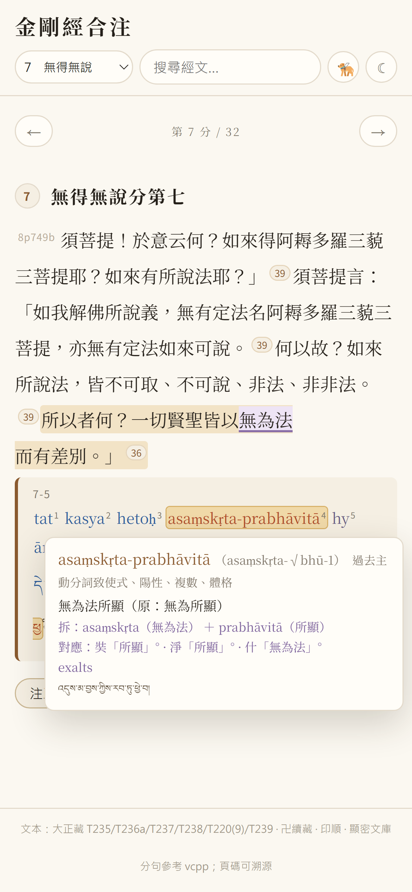
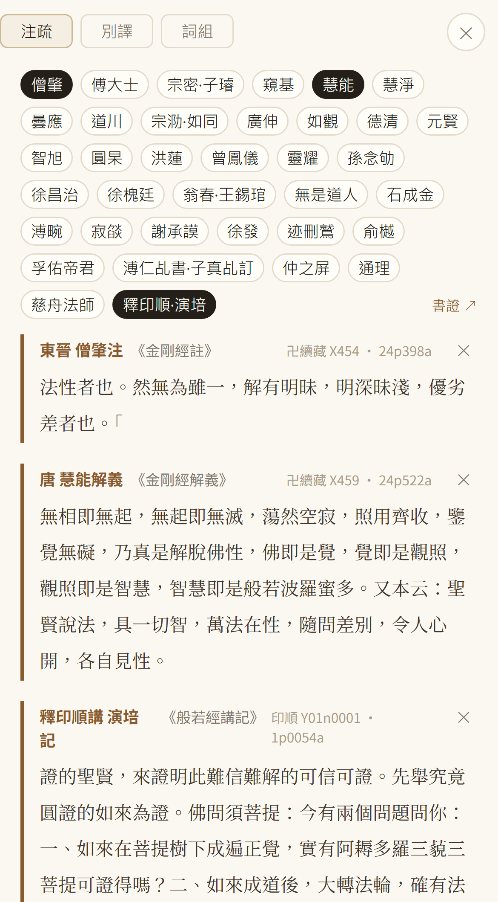
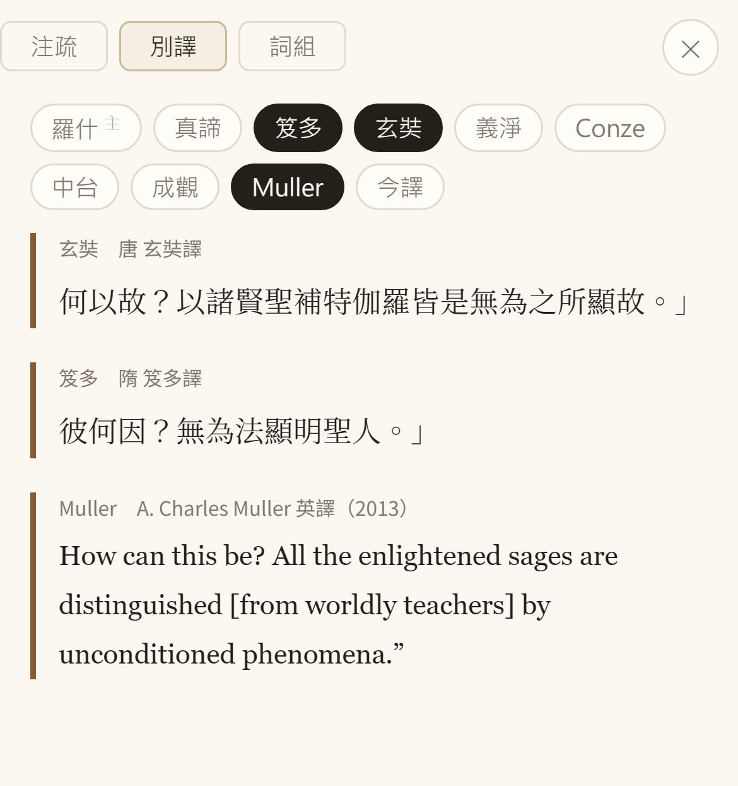
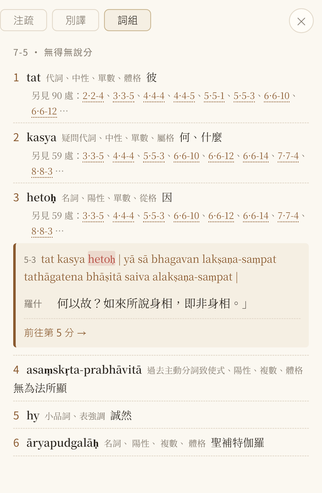

罗什主文、三十二分、梵藏逐词、十一种别译。
照下面四张图走一遍，就会用。

第 7 分「無得無說」只有四句，末句正是「一切賢聖皆以無為法而有差別」（句尾 36 家注疏）。点这一句：梵文逐词编号、藏文对照在句下展开；点 asaṃskṛta-prabhāvitā，原形、词性之外还拆成 asaṃskṛta（无为法）＋ prabhāvitā（所显），并列出奘／净「所显」、什「无为法」的对应。

同一句按作者年代排，点谁展开谁，可同时开三家。图上并开僧肇、慧能与释印顺讲、演培记。

同一句：玄奘「以诸贤圣补特伽罗皆是无所显故」、笈多逐词直译「彼何因？无为法显明圣人」、Muller 英译 “All the enlightened sages are distinguished [from worldly teachers] by unconditioned phenomena”。罗什把 prabhāvita（所显）译作「差别」，注家遂多解成贤圣证悟的浅深高下——僧肇「无为虽一，解有明昧，明深昧浅，优劣差者也」；寂焰「河无浅深，而浅深在兽」；智旭还得先问「既曰无为，云何差别？」。三家的「（无为）所显」，才是「以无为法而显」。

逐词列出原形、词性与汉译，并标出这个词在别处的位置。hetoḥ 另见 59 处，点「5·5-3」就地展开那一句——梵文 tat kasya hetoḥ｜yā sā bhagavan…，罗什「何以故？如来所说身相，即非身相」，下面还留着「前往第 5 分 →」。